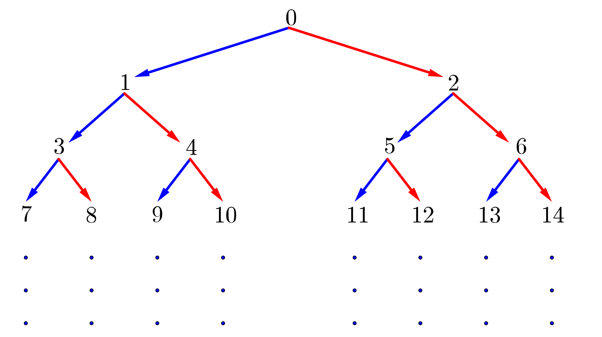

Problem of the Week
Problem C and Solution
Branching Out
Problem
Consider the following number tree.
In this number tree, the integers greater than or equal to 0 are written out in increasing order, with the top row containing one integer and every row after containing twice as many integers as the row above it.

If row 1 contains the integer 0, what is the fifth number in row 10?
Solution
Solution 1
One approach to solving the problem would be to write out the first 10 rows of the chart and read off the fifth number in row 10. You would discover that the fifth integer in row 10 is 515. This solution may “work” in this example but it is certainly not ideal. It would not be practical if you were asked for the seventh integer in row 50.
Observations
There are many patterns in the tree. The solutions provided below will look at some of the different patterns which can be used to solve the problem.
Solution 2
Row 1 contains 1 integer, row 2 contains 2 integers, row 3 contains 4 integers, and row 4 contains 8 integers. Each new row in the tree has twice as many integers as the previous row.
Using this, we could find the number of integers in the first 9 rows of the chart. There are \[1+2+4+8+16+32+64+128+256=511\]
integers in the first 9 rows of the chart. There are 511 integers in the 9 rows, but the first integer in the chart is 0. Therefore, it follows that the last integer in the 9th row is 1 less than the number of integers in 9 rows. That is, the last integer in row 9 is 510. Therefore, the first integer in row 10 is 511. We can easily count to the fifth spot to obtain 515, as above.
Solution 3
This solution is similar to Solution 2, but only looks at the rightmost number in each row.
To get from the top number to the rightmost number in row 2, add 2. To get from the rightmost number in row 2 to the rightmost number in row 3, add 4. To get from the rightmost number in row 3 to the rightmost number in row 4, add 8. The numbers that are added correspond to the number of integers in the next row. We will find the rightmost number in row 9 and then add 1 to get the leftmost number in row 10. The rightmost number in row 9 is: \[0+2+4+8+16+32+64+128+256=510\] This tells us that the leftmost number in row 10 is 511. Therefore, the fifth number in row 10 is 515.
Solution 4
Since each row after the first has twice as many integers as the row above, there is some connection to powers of 2 in the problem. The following table shows the row number, the rightmost number in that row, the power of 2 with the row number as the exponent, and the connection between this power and the last number in the row.
| Row Number | Rightmost Number in Row | Power of 2 | Connection |
|---|---|---|---|
| 1 | 0 | \(2^1=2\) | \(2^1-2=2-2=0\) |
| 2 | 2 | \(2^2=4\) | \(2^2-2=4-2=2\) |
| 3 | 6 | \(2^3=8\) | \(2^3-2=8-2=6\) |
| 4 | 14 | \(2^4=16\) | \(2^4-2=16-2=14\) |
| \(\vdots\) | \(\vdots\) | \(\vdots\) | \(\vdots\) |
| \(n\) | ?? | \(2^n\) | \(2^n-2=??\) |
It would appear that the last number in row 5 should be \(2^5-2=32-2=30\). We could write out the fifth row to confirm that this is correct.
It would also appear that the last number in row \(n\) should be \(2^n-2\). By recognizing the pattern, we predict that the last number in row 9 should be \(2^{9}-2=512-2=510\). We know from earlier solutions that this is correct.
Therefore, the first number in row 10 is 511 and the fifth number in row 10 is 515.
It should be noted that this relationship works for all of the rows we have sampled, but we have not proven that it is true in general. You will have to wait for some higher mathematics to be able to prove that this is true in general.
The pattern used in this solution is not an obvious one, but by discovering it the solution became fairly straightforward. In fact, if we accept the result as true, then we can quickly determine the value of the rightmost integer in any row with a simple calculation.